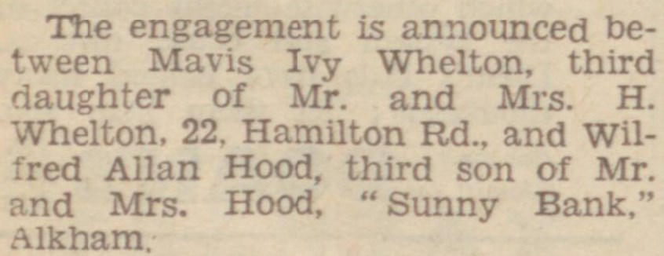
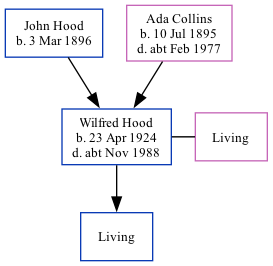

Wilfred Alan Hood 1924 - c1988
[ Home ] | [ Calendar ] | [ Surnames Index ] | [ Family History ]An errand boy general grocer and the 2nd of 3 children of John Hood and Ada Collins, Wilfred Hood, the third cousin once-removed on the father's side of <a href="I1.html">Nigel Horne</a>, was born in Elham, Kent, England on Apr 23, 1924<span class="citation">1,2,3</span> and. He married Mavis Whelton (with whom he had 1 surviving child) in Dover, Kent, England around Feb 1948<span class="citation">4</span>. On Sep 29, 1939, he lived at Elvington Cottage, Newington, Kent<span class="citation">1</span>. <p>He died <i>c.</i> Nov 1988 in Dover<span class="citation">3</span>.
Parents
- John H was born on Mar 3, 1896
- Ada Mary was born on Jul 10, 1895
Citations
- 1939 Register - Findmypast (was the son of the head of the household)
- England & Wales births 1837-2006 - Findmypast
- England & Wales deaths 1837-2007 - Findmypast
- England & Wales Marriages 1837-2005 - Findmypast
Media
Dover Express - August 8, 1947

England & Wales deaths 1837-2007 Transcription - BMD-D-1988-10-76754557
England & Wales marriages 1837-2008 Transcription - BMD-M-1948-1-AZ-000680-096
England & Wales births 1837-2006 - BMD/B/1924/2/AZ/000644/079
1939 Register - TNA/R39/1824/1824E/009/43
Family Tree
Generated by Ged2Site. Last updated on Jul 20, 2025